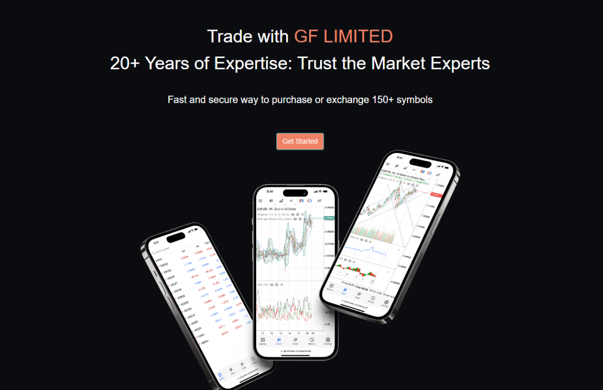
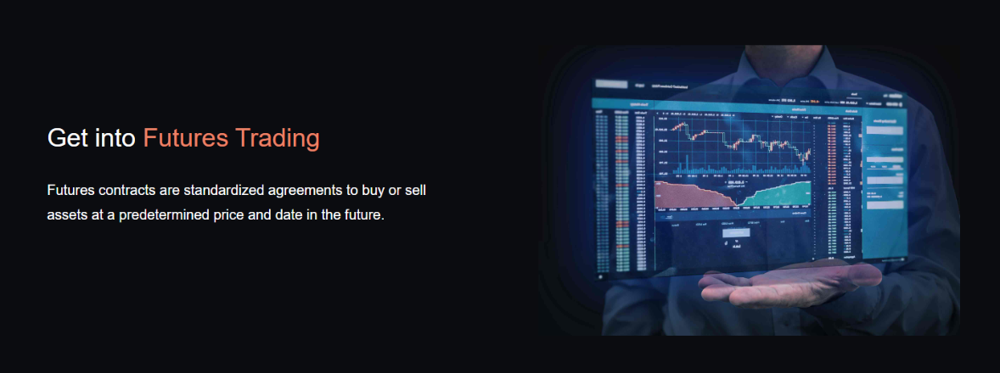
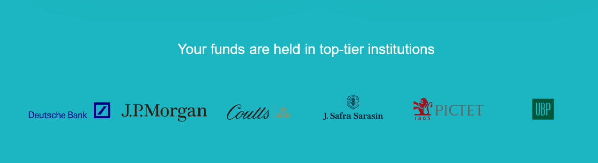

GF Limited Review: How Is The Ecosystem Of This Broker?
On the way to the right trading platform, you may come across a horde of options that confuse you. A wide range of trading brokers is now competing to get your attention. They tend to promise to bring the best, but just a few of them are capable of doing so. That is why, before settling for any brand, you must find some solid reasons.
To help you reduce the work of research, we provide you with this detailed GF Limited review. Let's see if you can benefit from any features or tools.
Trading platform

The trading platform is among the most important things to consider when choosing a broker. This is because it determines how good your overall experience is. We like that GF Limited does not ignore this aspect and meets our requirements regarding navigation and tools.
It is a browser-based platform, meaning there is no need to download or install any additional software. You can access it on multiple devices, including desktop, laptop, smartphone, and tablet. This gives those who are always on the go the flexibility to keep them up to date with what is happening on the financial markets.
Moreover, it has an intuitive interface, so beginners are likely to experience no difficulties or hassles while using it. It takes only a few minutes for us to grasp how the platform runs. Notably, although it is a basic platform, it does not mean that it lacks trading tools. We notice there are all kinds of necessary tools for fundamental and technical analysis, as well as for risk management.
All in all, we can say that it is a simple yet advanced and feature-rich platform. It can be a good solution for traders of all levels. While it reduces the learning curve for starters, it offers enough tools and features for more experienced users to deploy.
Trading markets

Trading products are what we want to dive into next in our GF Limited review. The company enables members to trade with a wide range of asset indexes. The list includes forex, crypto, stocks, futures, and commodities. This makes diversification simpler, and managing different investments becomes more convenient in a single place.
Some may want to get into the forex market, while others like the idea of discovering a variety of cryptocurrencies. GF Limited appears to acknowledge this fact, which happens with forex and crypto alongside commodities, stocks, and futures as offerings.
The choice is yours. We suggest you only engage in the market you fully understand. If you are a newbie, you can start with one, and once your trading confidence is improved, it is a good idea to trade more than one, which can be three or four, depending on your capital.
Security

When you transfer your money to a trading firm, you should expect it to be safe, secure, and transparent. GF Limited proves itself to be one of those. We have not seen any hidden fees come out of nowhere. The broker shows its honesty from the beginning, so our trading journey with it is satisfying.
Furthermore, the company clarifies that your funds are separated from the business account held in top-tier institutions, such as UBP, J.P. Morgan, and Coutts. It also shares why it has to collect some documents from you and how they are protected to give you peace of mind.
Final thoughts
After going through our GF Limited review, you now get an overall picture of what this brand can deliver. Now, it is your turn to determine whether to open an account with it.